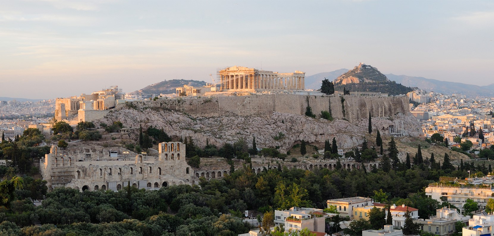

Acrópole de Atenas
A Acrópole de Atenas é uma das mais importantes heranças da civilização ocidental. Erguida sobre uma colina rochosa no centro da cidade de Atenas, Grécia, o complexo abriga templos e monumentos da Antiguidade clássica grega, sendo o Partenon seu monumento mais emblemático. Foi construída principalmente no século V a.C., durante o governo de Péricles, período áureo da democracia e da cultura ateniense.
Informações Gerais
| Característica | Detalhes |
|---|---|
| Localização | Atenas, Grécia |
| Construção principal | Século V a.C. (447–432 a.C. para o Partenon) |
| Altitude da colina | 156 metros acima do nível do mar |
| Monumento principal | Partenon (templo dedicado à deusa Atena) |
| Outros monumentos | Erecteion, Propileus, Templo de Atena Nike |
| Patrimônio Mundial UNESCO | Desde 1987 |
| Período de esplendor | Grécia Clássica (500–323 a.C.) |
Curiosidades
- A palavra "Acrópole" vem do grego e significa "cidade alta".
- O Partenon foi construído sem o uso de argamassa — as pedras de mármore se encaixam com precisão milimétrica.
- Ao longo dos séculos, o Partenon já foi templo cristão e mesquita antes de ser tombado como patrimônio histórico.
- Em 1687, uma explosão de pólvora armazenada pelos otomanos dentro do Partenon destruiu grande parte do teto e das colunas centrais.
- As famosas esculturas do Partenon (Mármores de Elgin) estão no Museu Britânico, em Londres, gerando disputas entre Grécia e Reino Unido.
- Recebe mais de 3 milhões de visitantes por ano.
Imagen
